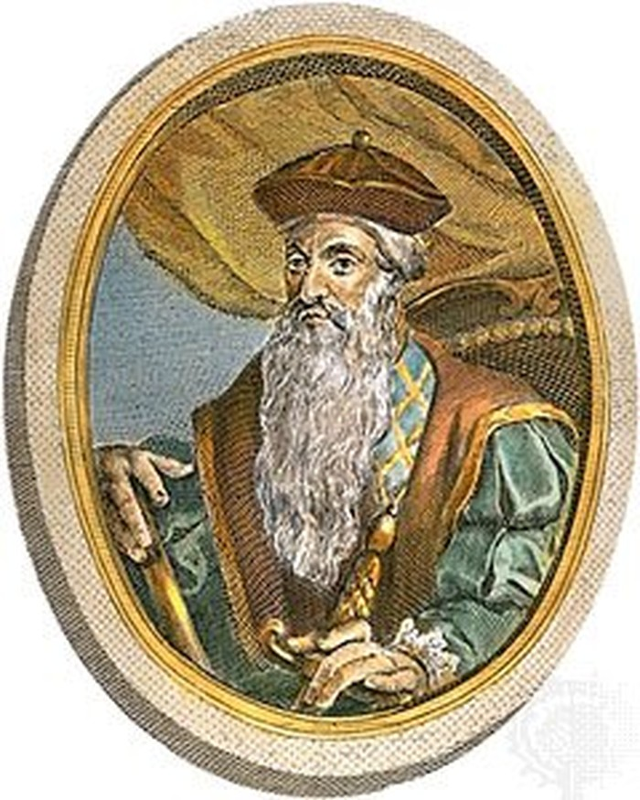

Nama : Marcopolo
Lahir : 1254 Venesia,
Italia.
Tujuan : Mencari
dunia timur yang
kaya (China)
Prestasi :
penjelajah Eropa
pertama yang
memberi informasi
mengenai
kekayaan
di wilayah timur,
semua itu tertuang dalam buku berjudul
Imagomundi

Tahun penjelajahan :
1487
Kebangsaan :Portugal
Sponsor : Raja John II
Latar Belakang
Pelayaran :
Ditutupnya
Constatinopel oleh
Mehmed Al Fatih
Tujuan : Menemukan
India (Spice Island)
Prestasi :
Menemukan Ujung
Afrika, Cape Strom
dan membuka
harapan bagi
para
pelaut Portugal untuk
menemukan “The
New World, wilayah
tersebut saat ini
dikenal sebagai
Tanjung Harapan

Nama : Vasco Da Gamma
Kebangsaan :
Portugal
Titik terjauh : Calicut,
India tahun 1498
Sponsor : Raja
Manuel I
Latar Belakang :
Ditutupnya
Constatinopel dan
melanjutkan
perjalanan B. Diaz
Tujuan : Menemukan
India (Spice Island)
Prestasi : Orang
Portugal pertama
yang sampai di
wilayah yang
dianggap sebagai
“Spice Island”.

Nama : Alfonso De Alburquerque